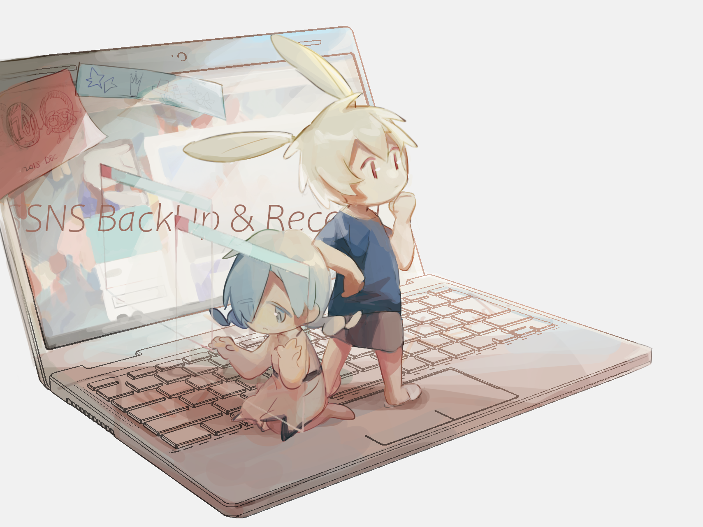

前言
感谢来访!!
这里是Mazui3的个人博客.
建了这个地方用于存放从2015开始的SNS记录,于2020年8月建成.大多为老福特笔记用+学习用博客的备份.
2020开始老福特停更,这里是最后会存放想法,生活,笔记的地方.
也许开源和去中心化是自由的归属.

中之人
笔名是Mazui,称呼是麻醉.老熟人也叫我里约.
普通学生.驱动力是99%的兴趣和1%的承诺.
五分钟热度.见识少,梦想是读很多很多的书.
喜欢自己编原创角色(oc)和故事玩.关于角色会放在图书馆里,这里的算作关于他们的唠嗑同人.
图书馆链接🌟.
某个post讲了关于博主名字的来源和两位形象的设定->麻醉和里约.
这个博客的使用准则
如果把其他使用平台比作餐厅的话,这里可以理解成餐厅后厨房一样的存在.
准则
- 内容包括并不限于自己的 画,生活,笔记和唠嗑 .
- 也有备份别人给我的图,作者有标注其他联系方式,没有标注的是对方没有营业用账号.
- 不要转载. 图片的保存ok! 任何使用不可.
- 为个人保存记录而使用.
- 博主编码技术稀烂,在各种意想不到的地方都可以有bug,提前道歉orz.
使用
电脑的左侧 以及 手机的上方 是博客的页面栏.
- Home: 博文主页面
- Readme: 这份说明
- Tags: 文章标签
包括 学习用标签 [R][SQL][python] 等,oc标签 [在日落之前][卡尔马] 等,生活用标签 [Thank you Mr.goose][民以食为天][年终总结]等. - Categories: 文章种类
- Archives: 归档
- Schedule: ddl值班点
- Mailbox: 通用留言处
- FriendLink:
绝佳招募中的友联 - Library: 为oc造的网站
没有归纳在页面栏的页面:
- Commission: 委托记录
报告(2021.05.13更新)
添加了博客制作记录.
添加了委托页面,停止中所以没有添加到页面栏中.
今年笔记更新偏多,名为好作品补全计划的读后感系列正绝佳拖稿中.
其他账号
账号注册还蛮多,但疲于打理.
姑且整理下,都随缘上线.
默认联系方式是邮箱📮mazui.and.rio@gmail.com.
- 推特(mazui_3)
- Instagram(mazui_3)
- Lofter(mazui3) 停止更新了.
- 微博(mazui3)微博清空过一次,不怎么发东西.
- 半次元(mazui)是时不时就消失一个月的账号.
- Deviantart(mazui3)注册了想找个地方存放同人,结果再也没画过同人!
- Pixiv(リオ)P站是不更新也心安理得的地方,很喜欢.
- Tunblr(注册过两个账号都 被遗忘 !)
- Patreon(也注册过,因为没有更新的东西而 被遗忘 .)
- Bilibili(mazui3)一年更新一次的神秘账号,用于网络冲浪,结果被朋友回关了,非常不好意思!
以上是以Mazui身份注册的账号.QQ也以Mazui的身份加过好友,但是用于私人目的,不营业QQ空间.
甚至最近为了锻炼注意力连QQ都会卸载…
谢谢阅览,祝你生活平安.

图：oversleep twi